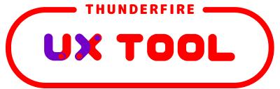

AI & LLM
RAG, agents, multimodal reasoning, product logic, and model-powered interfaces.
BCI / AI / Robotics / Spatial Intelligence
I build neural interfaces that turn human intent into physical action.
Incoming Columbia MSAI Robotics Track student and Tsinghua-trained cross-disciplinary builder working across BCI, AI systems, robot learning, humanoid control, and spatial intelligence. Trained through architecture and computational design, I think in bodies, machines, and environments; the question behind my work is how systems can understand human intent and turn it into real, usable, elegant action without phone screens as the default interface.
把人的意图变成机器与环境的行动。
 Tsinghua University
Tsinghua Architecture
Tsinghua Automation
Tsinghua University
Tsinghua Architecture
Tsinghua Automation
 Tsinghua IIIS
Tsinghua IIIS
 Columbia University
Columbia Engineering
Columbia University
Columbia Engineering

NetEase Leihuo AWS Developer Program
Google I/O Cloud
AWS Developer Program
Google I/O Cloud
 UNICEF
UNICEF
Work / Research
Research System
RAG, agents, multimodal reasoning, product logic, and model-powered interfaces.
EEG signal processing, FBCSP, motor imagery, SSVEP, and intent modeling.
Sim-to-real transfer, reinforcement learning, humanoid motion, ROS, and Isaac Sim.
Architecture, XR, computational design, digital twins, and spatial reasoning systems.
Vision
The phone made computation portable. The next interface should make computation ambient. I am working toward systems that infer intent from brain and body signals, reason through AI agents, and execute through robots, appliances, and spatial environments.
Brain, body, and context signals become usable intent models.
AI agents connect goals, constraints, memory, and environment state.
Robots, tools, homes, and spatial systems respond without phone screens as the default layer.
Journey
The work keeps changing shape. The center stays the same: perception, intention, motion, and care.
Built immersive systems around gesture recognition, pose datasets, and early AIGC workflows.
Connected brainwave interaction, somatosensory games, and generative design through Pipedream.
Worked on long-term dialogue systems, RAG context, robot-arm control, and sim-to-real learning.
Focusing on BCI + LLM interaction, humanoid control, and AI systems that understand spatial logic.
Beyond The Lab
I sail, travel, observe, and make things. Open water has trained my sense of timing, uncertainty, endurance, and trust in instruments. Those instincts come back into the way I build with machines.
Contact